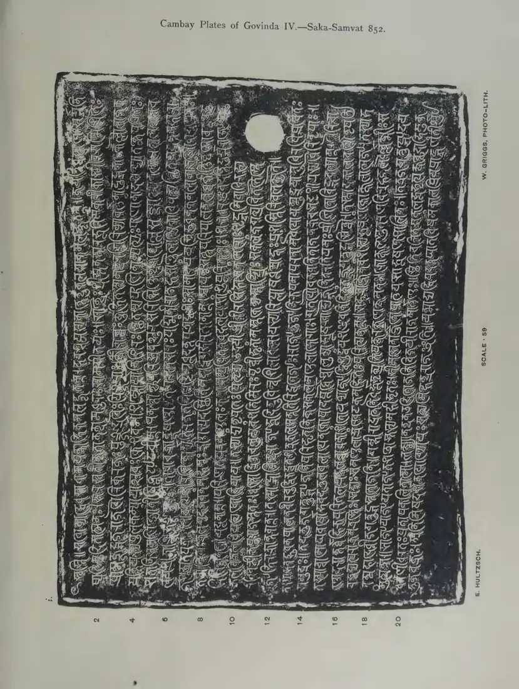
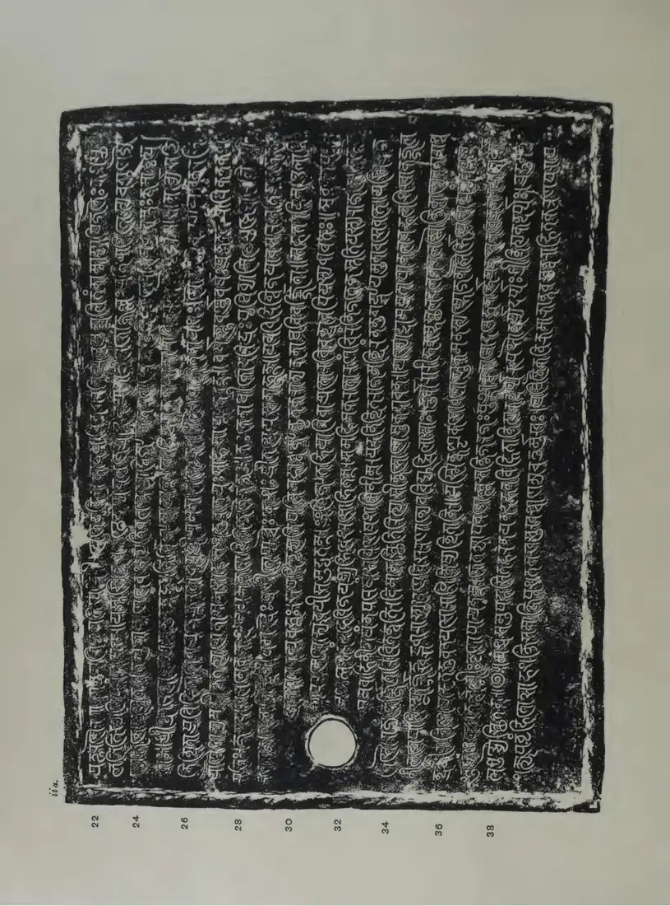
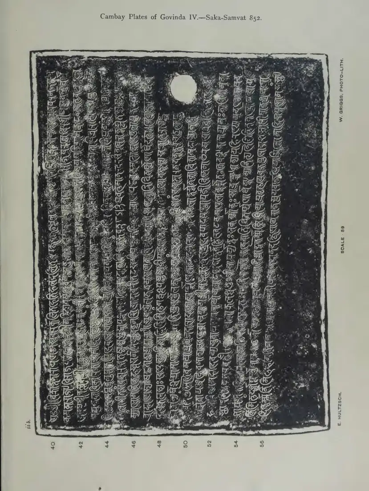

Cambay plates of Gövinda IV.; Śaka-Saṅvat 852
CAMBAY PLATES OF GOVINDA IV.;
SAKA-SAMVAT 852.
The copper-plates, a transcript and translation of which are given below, were originally found at Cambay, called Khambâyat by the people. While a husbandman was tilling his field, his plough struck against a hard substance. On digging a portion of the ground near that spot, he discovered a wooden box, which was so rotten that with little effort he broke it to pieces. It contained a black dirty object, which, until it was cleaned, was not recognised to be these plates. From the husbandman the plates afterwards went into the possession of a Gujarâti living at Petlad, which is not very far from Cambay. The Gujarâti was very unwilling to part with the plates. I requested Professor Abaji Vishnu Kathavate to intercede in my favour. This he kindly did, and was soon successful in securing the plates for me.
The plates are three in number, each about 138/8" long by 108/8" broad. The edges of them are fashioned slightly thicker, so as to serve as rims for the protection of the writing. The inscription is engraved on the inner sides of the first and third plates, and on both sides of the second plate. Two small pieces have been broken off near the lower corners of the third plate, and a few letters are here and there damaged on account of verdigris. Still the inscription is on the whole well preserved and legible throughout. The plates are strung together by a circular ring, of about 48/8" in diameter and of about 3/4" in thickness, passing through holes on one side of each plate. The ring had not yet been cut when the plates were sent to Dr. Hultzsch. The ends
1 From an inked stampage.
2 In this verse "đ=êđ=iya" rhymes with ntdiya and Tanđa° with "m=ayđa".
3 I.e. with which all documents issued at this time had to begin.
4 This seems to refer to some custom observed at the coronation of a king; compare South-Ind. Inscr. Vol. III. p 185 and note 2.
of the ring are soldered into a roughly square seal, which measures in height and breadth, and bears, in relief on a countersunk surface, as the principal figure, an image of Garuđa, squatting and facing to the full front, with his prominent beak-nose and expanded wings, and holding a snake in each hand. On Garuđa's proper right there is a representation of Gaṇapati in the upper corner, and lower down a chaurí and a lamp; and on his proper left, some goddess, seated on an animal, too indistinct to be recognised, and below her, a svastika.1 Along the border of the seal are to be seen certain emblems, among which a dagger, a bow and an arrow, and a thunderbolt are recognisable. Beneath the central figure certain letters were doubtless engraved, but are now almost effaced.—The engraving is clear and well executed.—The characters agree fully with those of the other Ráshṭrakúṭa records of this period, viz. the 10th century. The average size of the letters is about .—The language is Sanskrit throughout. Excepting the introductory óñ svasti, down to the beginning of line 38 the inscription is in verse; and the rest is in prose, excepting the five benedictive and imprecatory verses (ll. 61-66) and another verse, containing the name of the person who drew up the charter (l. 66 f.). All the verses of this grant, excepting three of the introductory, and two of the genealogical, verses, occur in the Sânglí charter of the same royal grantor, viz. the Ráshṭrakúṭa prince Gôvinda IV.—As regards orthography, it is sufficient to say (1) that the letter b is throughout denoted by the sign for v; (2) that the letters g, j, n, t, d, p, m, l or v following r are doubled; but in the case of ju or the conjunct dyu coming after r, the letter j or d is not doubled. There is also an indifference about the doubling of y following r; thus it is doubled in Nágamâryyasya in l. 60, but not in Nágamâryáya in l. 52; (3) that the letter dh is doubled (with d in the usual manner) in conjunction with a following y, once in "samvaddhyamâna" in l. 42; and (4) that the final m of a word, instead of being changed to an anusvâra, is twice joined to a following p, in pulakam=pâyât and phañinâm=patyuh in l. 4.—As regards prosody, it is worthy of note that the metre of verse 7, which occurs also in the Sânglí grant, cannot be determined. There can be little doubt that it is an instance of a half-equal metre (ardha-sama-vritta). But it cannot be identified with any one of the half-equal metres, given in ordinary works on prosody. There is, indeed, a rule of prosody that any two quarters of regular metres may be combined to form what is technically called an upajâi. But even here the unequal quarters of the verse in question cannot be severally identified with those of the regular metres.
The inscription is one of the Ráshṭrakúṭa prince Gôvinda IV. or, as he is described in lines 40-42, the Paramabhattâraka Mahârájâdhirája Paramêsvara, the prosperous Suvarṇavarsha-dêva-Prithyvivallabha, the prosperous Vallabhanarêndradêva, who meditated on the feet of the Paramabhattâraka Mahârájâdhirája Paramêsvara, the prosperous Nityavarsha, i.e. his father Indra III. Govindarâja had, when this charter was issued, gone from his capital Mânyakhêta to Kapitthaka near the bank of the Godâvarî, for the festival of patṭabandha2 (l. 46). On that occasion he weighed himself against gold. When he ascended the scales, he bestowed on Brâhmaṇs six hundred agrahâras and three lacs of suvarṇa coins, and on temples eight hundred villages, four lacs of suvarṇas and thirty-two lacs of drammas (ll. 46-49). Afterwards, without descending from the pan, he granted the village of Kêvañja, lying near the holy place Kâvikâ and
1 The figures on this seal are identical with those on that of the Dêôlî plates, excepting the central figure, which Dr. Hultzsch thinks to be that of Śiva. See above, Vol. V. p. 189, note 1.
2 The term patṭabandha, which literally means 'binding of the fillet,' has been generally supposed to signify 'coronation-ceremony.' Though evidence may perhaps be adduced in support of this signification, there can be little doubt that it does not suit here. The earliest record of Gôvinda IV. gives for him the date Šaka 840 (expired), which is prior to Šaka 852 (expired), the date of our grant, by no less than twelve years. It is hardly credible that he remained uncrowned for at least twelve years, if patṭabandha is to be understood in the sense of 'coronation-ceremony.' Besides, in these as well as the Sânglî plates he is expressly said to have been 'permanently settled at his capital Mânyakhêta' when he issued the charters. Again, what can be more unnatural than that a king, instead of getting himself crowned at his own capital, goes to some place far away from it for his coronation? For these reasons, I think, the word patṭabandha does not here at any rate mean 'coronation-ceremony.'
situated in the Khēṭaka district of the Láṭa country (ll. 52-54). It is to record the grant of this village that the present charter was issued. The donee was a Brāhmaṇ of the name of Nāgamārya, son of Mahādēvayya, a member of the Māṭhara gôtra and a student of the Vāji-Kāṇva śikhā (ll. 51-52). He is described as staying at Mānyakhēṭa and subsisting on the feet of Vallabhanarēndradēva, i.e. Gôvinda IV. himself, but is said to have originally resided at Kāvikā.
The grant is dated, both in words and figures, in Śaka-Samvat 852 expired, in the current cyclic year of Khara, on Monday, the tenth tithi of the bright half of Jyaishṭha, when the moon was near the constellation Hasta (ll. 44-46). Professor Kielhorn kindly contributes the following remarks:— “ This date, for Śaka-Samvat 852 expired, regularly corresponds to Monday, the 10th May A.D. 930, when the tenth tithi of the bright half ended 12 h. 3 m., and the nakshatra was Hasta, by the equal space system and according to Garga for 22 h. 59 m., and by the Brahma-siddhānta for 19 h. 42 m., after mean sunrise. By the northern luni-solar and strict mean-sign systems the day fell in the year Khara, which lasted from the 23rd December A.D. 929 to the 19th December A.D. 930. [By the southern system the year would have been Vikṛita.] ”
Having thus disposed of the formal part of the grant, I shall now give an account of the thirty-one verses, descriptive of genealogy, and of the preamble of the prose passages that follow. After the introductory ōm svastī, the inscription opens with a verse (well known to us from other Rāshṭrakūṭa records), invoking the protection of Vishṇu and Śiva. The next verse is in honour of the Sāmavēda, and the two verses following it (3-4) contain invocations to Vishṇu and Śēsha. In verse 5 we are told that from the Moon was descended the race of the Yadus, to the glorification of which the next verse is devoted. After thus bestowing praise on the Yadus, Dantidurgarāja is mentioned in verse 7 as having arisen in the spotless race of the Yadus, as the moon in the clear sky. He was succeeded on the throne by his paternal uncle Kṛishṇarāja (I.), who is represented to have destroyed the Chalukya race, as the sun dispels darkness (v. 8). After Kṛishṇarāja I. his eldest son Gôvindarāja (II.) came to the throne, and after Gôvindarāja II. his younger brother, who bore the appellation Nirupama (vv. 9-10). Dr. Fleet, who strongly holds that Gôvindarāja II. did not obtain sovereignty, brings forward the argument, among others in support of his view, that the Sāṅglī charter, though it places Gôvindarāja II. between Kṛishṇa I. and (Dhruva-)Nirupama, “ does not make any assertion that he reigned.”1 This statement can only be understood to mean that verse 6 of the Sāṅglī grant, which is identical with verse 9 of our grant, does not explicitly speak of Gôvindarāja II. as having become a king, but that his name occurs between those of Kṛishṇarāja I. and (Dhruva-)Nirupama. If this is what Dr. Fleet means, then we shall have to suppose that Jagattuṅga(-Gôvindā III.) and Amôghavarsha (I.) also did not reign. For verses 11 and 12, in which their names are mentioned, do not tell us in explicit words that they became kings, but simply place them between (Dhruva-)Nirupama and Akālavarsha(-Kṛishṇa II.). Hence, if Jagattuṅga(-Gôvinda III.) and Amôghavarsha I. are to be supposed to have reigned, Gôvindarāja II. too must, for the same reason, be regarded as having sat on the throne.
(Dhruva-)Nirupama was succeeded by his son Jagattuṅga(-Gôvinda III.), on whom nothing but conventional praise is bestowed (v. 11). After Jagattuṅga(-Gôvinda III.), Amôghavarsha (I.) became king, who, in the first half of verse 12, is said to have gratified the god Yama at Viṅgavallī with unprecedented morsels of cakes, which were the Chālukyas. This means that he inflicted a crushing defeat on the Eastern Chālukyas at Viṅgavallī, which, I think, probably signifies the Vēṅgimaṇdala, the territory over which they ruled. The second half of the verse, if I have rightly understood it, seems to mention a reservoir or some such thing,
1 See above, Vol. VI. p. 170 f., where Dr. Fleet meets the objections I brought against his view in my paper in J. Bo. Br. R. A. S. Vol. XX. p. 133 f.
which received the name of Jagattuñga-sindhu after Jagattuñga(-Gôvinda III.), father of Amôghavarsha I.
After Amôghavarsha I. the throne was occupied by his son Akálavarsha(-Krishna II.), of whom verse 13 says that his enemies abandoned the city of Khêtaka, which, in my opinion, is here meant to denote Mânyakhêta itself, the capital of the Râshtrakûta princes. Two Eastern Châlukya records1 mention that Guṇaka-Vijayâditya III. (A.D. 844-888) “frightened the firebrand Krishṇa and completely burnt his city,”2 and that “king Vallabha did honour to the arms of Vijayâditya (III.).” It, therefore, appears that the Eastern Châlukya prince Guṇaka-Vijayâditya III. defeated the Râshtrakûta king Krishṇa II. and was in possession of his capital Mânyakhêta, and it is to the act of repulsing this Châlukya prince from Mânyakhêta that verse 13 of our grant refers.3 Verse 14 states that Akálavarsha(-Krishna II.) married the daughter of Kôkkala, who belonged to the family of Sahasrârjuna, i.e. the Chêdi dynasty. Now, the Bilhari inscription speaks of Kôkkalla as having erected two columns of fame, viz. Krishnarâja in the south and Bhôjadêva in the north.4 Similarly, the Benares plates of the Chêdi prince Karṇadêva state that Kôkkalla's hand, which granted freedom from fear, was on (the head of) Bhôja Vallabharâja, Śrî-Harsha and Śañkaragaṇa.5 There can hardly be a doubt that the Krishṇarâja of the Bilhari inscription is identical with the Vallabharâja of the Benares plates, and that both are identical with the Râshtrakûta prince Akálavarsha(-Krishna II.). And the support, which Kôkkala lent to Akálavarsha(-Krishna II.), was given in all likelihood at the time when the latter was defeated, and his capital Mânyakhêta occupied, by the Eastern Châlukya king Guṇaka-Vijayâditya III. The last páda of verse 14 tells us that from the union of Akálavarsha (-Krishna II.) and the daughter of Kôkkala sprang Jagattuñga, who, in verses 15 and 16, is said to have married Lakshmî, daughter of Raṇavigraha, son of Kôkkala.6 Verse 16 speaks of a prince named Arjuna as having helped Jagattuñga with his army and thus enabled him to acquire fame. It does not seem difficult to identify this Arjuna. In verse 20, Arjuna is mentioned as a son of Kôkkalla. Arjuna was thus a brother of Raṇavigraha, and consequently an uncle-in-law of Jagattuñga. And, in all likelihood, it is this Arjuna who seems to have rendered him assistance.
Verses 17-18 relate that from this Jagattuñga and Lakshmî king Indra (III.) was born. Verse 19 describes a great victory achieved by this Indra. The first line of this stanza may be thus translated:—“The courtyard (of the temple of the god) Kálapriya (became) uneven by
1 Ind. Ant. Vol. XX. p. 102.
2 [For a different explanation of this statement and its bearing, see above, Vol. IV. p. 226 f.—E.H.]1
3 Verse 18 is also susceptible of another interpretation. Khêtaka may be taken to denote the modern Kaira, and the term mandala to refer to the surrounding district. If so, the verse must be understood as containing an allusion to Krishṇa II.'s having supplanted the subordinate branch of the Râshtrakûta dynasty, reigning at Khêtaka. But the word parityakta implies that Khêtaka, before it was occupied by the enemies, was under the sway of Krishṇa II., and that, when it was so occupied, he by his prowess compelled the enemies to evacuate it. But the Râshtrakûtas of the subordinate branch did not occupy Khêtaka and the surrounding district at any time during Krishṇa II.'s reign, but were ruling over it long before him. Again, the word ahita as applied to these tributary Râshtrakûtas does not seem to be appropriate. They are referred to as šulkika-Râshtrakûtas when their rebellion against Amôghavarsha I. is mentioned (Ind. Ant. Vol. XII. p. 183, and Vol. XIV. p. 199). Again, they are spoken of as bândhavas when their disaffection towards the Gujarât Râshtrakûta prince Dhruva II. is alluded to (Ind. Ant. Vol. XII. p. 184). But in no case the word ahita or its synonyms are used to denote them. For these reasons the second interpretation does not commend itself to me as easily as the first, suggested in the text. The latter is much more probable, because we know that Mânyakhêta was once occupied during Krishṇa II.'s life-time by the Eastern Châlukyas, who can, with propriety, be called his ahitas, inasmuch as they were the mortal enemies of the Râshtrakûta dynasty.
4 See above, Vol. I. p. 256, verse 17.
5 Ibid. Vol. II. p. 306, verse 7.
6 The true spelling of the name appears to be Kôkkalla, as attested by the records of the Chêdi dynasty. It is spelt Kôkkala in verses 14 and 15, on account of the exigencies of the metre. The correct spelling of the name occurs in verse 20.
the strokes of the tusks of his rutting elephants.” The god Kálapriya is the same as Mahákála,1 whose temple at Ujjain is so widely known all over India. It is on the occasion of the festival held in honour of this Kálapriya that the three plays of the poet Bhavabhúti were represented. It thus appears that, in his expedition of conquest in Northern India, Indra III. halted at Ujjain to pay his homage to the god. The remaining three lines may be thus rendered :— “His steeds crossed the unfathomable Yamunâ which rivals the sea. He completely devastated that hostile city of Mahôdaya, which is even to-day greatly renowned among men by the name of Kuśasthala.” Indra III. therefore appears to have marched from Ujjain northward, crossed the Jumna and reduced the city of Mahôdaya. The lexicon of Hêmachandra tells us that Mahôdaya and Kuśasthala are both names of Kanyakubja,2 i.e. Kanauj, so that verse 19 represents Indra III. to have attacked the city of Kanauj. But the complete devastation of Mahôdaya, which Indra III. is spoken of as having brought about, is merely poetical. For, the poet’s object appears to be to introduce a play on the words mahôdaya and kuśasthala, which in their conventional sense mean Kanauj, and in their etymological one, ‘full of high prosperity’ and ‘a spot of kuśa grass’ respectively: Mahôdaya, i.e. Kanauj, ceased to be mahôdaya, i.e. highly prosperous, and became kuśasthala, i.e. a mere spot of kuśa grass. Hence, the complete annihilation of the city of Mahôdaya or Kanauj alluded to in this stanza cannot be reasonably assumed to be a historical fact. This is also seen from the consideration that, as a matter of fact, for long after the event recorded in this verse took place, Kanauj continued to be the capital of several princes, ruling over Northern India.3 What Indra III. actually did beyond attacking Mahôdaya or Kanauj, cannot be inferred from the verse itself. But we can ascertain it with the help of other inscriptions. We shall, however, in the first place, see whether we can decide which of the rulers of Kanauj Indra III. vanquished. The Râshtrakúṭa records give the dates 915 and 917 A.D. for Indra III.; and the succession and dates of the princes, reigning at Mahôdaya or Kanauj about this period, as determined from the Gwalior, Pehoa and Sīyadôṇî inscriptions, are as follows :
- 1. Bhôjā, A.D. 862, 876 and 882.
- 2. Mahêndrapâla, A.D. 903 and 907.
- 3. Kshitipâla or Mahîpâla, A.D. 917.
- 4. Dêvapâla, A.D. 948.4
Now, as for Indra (III.) we have the dates A.D. 915 and 9175 and for Kshitipâla or Mahîpâla the date A.D. 917, there can hardly be a doubt that they were contemporaries. And it is almost certain that it is this Kshitipâla whom Indra III. conquered. Let us now find out what Indra III. did beyond obtaining a victory over Kshitipâla. A Khajurâho
1 Jagaddhara, in his commentary on the Málatimádhava, says that Kálapriyanátha is tad-déśa-dêva-bhéda, i.e. a particular deity belonging to that country. But what country Jagaddhara had in his mind, cannot be accurately made out. Íśvarachandra Vidyáságara, in his edition of the Uttararámacharita, says in a footnote that Kálapriyanátha is the name of a deity installed in Padmapura in Vidarbha, i.e. the native town of the poet Bhavabhúti. But this note appears to be based on the comment of Jagaddhara just quoted, and, according to Íśvarachandra, it seems that the expression tad-déśa° must be understood to mean the country to which Bhavabhúti belonged. In the St. Petersburg Dictionary, however, Kálapriyanátha is identified with the Mahákála of Ujjayinî. This identification doubtless fits here excellently, but I have not been able to trace the authority which supports it.
2 Hêmachandra’s Abhidânachintâmaṇi, v. 273 f.
3 The king of Mahôdaya or Kanauj, whom Indra III. defeated, has been shown further on to be Kshitipâla or Mahîpâla. And we have actual records to show that, after this Kshitipâla, there reigned at Kanauj his successors called Dêvapâladêva, Vijayapâladêva, Râjyapâladêva and Trilôchanapâladêva, respectively (see above, Vol. III. p. 265; Ind. Ant. Vol. XVIII. p. 33 ff.). They were followed by the Gaharwaras or Râthôrs of Kanauj (C. Mabel Duff’s Chronology of India, p. 285).
4 See above, Vol. I. p. 171 f.; C. Mabel Duff’s Chronology of India, p. 296.
5 Dr. Fleet’s Dyn. Kan. Distr. p. 415 f.
inscription1 claims that a king named Kshitipâla was placed on his throne by the Chandèlla prince Harshadèva. As this Harshadèva flourished at the beginning of the tenth century, the Kshitipâla, whom he re-instated on his throne, can be no other than Kshitipâla, king of Kanauj, who was a contemporary of, and vanquished by, Indra III. Indra III., therefore, appears not only to have attacked Mahôdaya or Kanauj, but also to have defeated and ousted its ruler Kshitipiâla.
Let us now proceed a step further. The Bhâgalpur grant of Nârâyanapâla2 asserts that Dharmapâla, the second prince of the Pâla dynasty, acquired the sovereignty of Mahôdaya by conquering Indrarâja and others, but bestowed it upon one Chakrâyudha, just as Bali acquired the sovereignty of the three worlds by vanishing Indra and other gods, and bestowed it upon Chakrâyudha (Vishnu). The Bhâgalpur grant thus tells us that Dharmapâla first defeated Indrarâja and others, and obtained the sovereignty of Mahôdaya or Kanauj for himself, but gave it over to one Chakrâyudha. The same event is referred to in the Khâlimpur charter3 of Dharmapâla himself, in the verse—
भोजैमंतस्यैः समद्रैः कुरुयदुयवनावन्तिगन्धारकीरै-
भूपैर्व्यालोलमौलिप्रणतिपरिणतैः. साधु संगीर्यमाणः ।
हृथत्पञ्चालवृद्धोद्धृतकनकमयस्वाभिषेकोदकुश्भी
दत्तः श्रीकन्यकुबस्सललितचलितभूलतालक्ष्म येन ॥
The stanza, as it stands, yields no intelligible sense. There can be little doubt that the reading of the last line is faulty, though it occurs, as given here, in the plates.4 Since we have dattaḥ in the nominative case,—that which is given, or in this particular case abhishêk-ôda-kumbhaḥ, which is in the nominative case, must go with dattaḥ. Further, the person to whom something is given must be in the dative case; but we have no such dative in the verse, and moreover the nominative śrī-Kanyakuv(b)jaḥ remains unconnected. The sense, however, requires that śrī-Kanyakubja should be considered the person to whom the coronation pitcher was given. Evidently, therefore, śrī-Kanyakubjaḥ requires to be corrected into śrī-Kanyakubjâya, even at the risk of the break of the cæsura. With this emendation, the verse yields the following sense:—“With a sign of his eyebrows gracefully moved, he made over to the illustrious king of Kanyakubja his own golden water-pitcher of coronation, lifted up by the delighted elders of Pañchâla, and acquiesced in by the Bhôja, Matsya, Madra, Kuru, Yadu, Yavana, Avanti, Gandhâra and Kîra kings, bent down while bowing with their heads trembling.” What the verse means is, that Dharmapâla earned for himself the sovereignty of Pañchâla, and was consequently entitled to the coronation as king of Pañchâla, which was approved of by the neighbouring rulers, such as Bhôja, Matsya and other kings; but he declined it and assented instead to the installation of the king of Kanyakubja. The Pañchâla country here referred to denotes the upper half of the Dôâb between the Ganges and the Jumna with Kanyakubja as its principal town, and to this effect we have the authority of the poet Râjasêkhara who flourished about this period.5 Hence the fact mentioned in the Khâlimpur charter is the same as that reported in the Bhâgalpur grant. And
1 See above, Vol. I. p. 121 f. Prof. Kielhorn, however, thinks that Harshadèva first vanquished Kshitipiâla and subsequently restored him to his throne. But, in my humble opinion, the natural interpretation that can be put on the verse is that Harshadèva placed Kshitipiâla on his throne, who was ousted, not by Harshadèva himself, but by a different king. This interpretation is supported by the fact mentioned in our grant, that Indra III. reduced Mahôdaya or Kanauj, in other words defeated the then reigning sovereign, who can be no other than Kshitipiâla himself. This interpretation, again, agrees with what the Khâlimpur and Bhâgalpur charters have to say, as will be shown further on.
2 Ind. Ant. Vol. XV. p. 304 ff.; ibid. Vol. XX. p. 187 f.
3 See above, Vol. IV. p. 243 ff.
4 See the photo-etching of the plates in J. B. A. S. Vol. LXIII. Part I.
5 See the Bðlarðmáyaṇa, X. 86.
piecing together the items of information furnished by these two charters, we find that Dharmapâla defeated a prince named Indrarâja, and acquired for himself the sovereignty of Mahôdaya or Kanauj, i.e. the supremacy of Pañchâla, but conferred it upon Chakrâyudha, according to the Bhâgalpur plates, and upon the king of Kanyakubja, according to the Khâlimpur plates. Further, as Dharmapâla wrested the sovereignty of Mahôdaya or Kanyakubja, not from the king of Kanyakubja himself, but from Indrarâja, and bestowed it upon the king of Kanyakubja, the conclusion is irresistible that Indrarâja must have vanquished the king of Kanauj and occupied his capital before he himself suffered defeat at the hands of Dharmapâla. What we find, therefore, from these two charters is, that (i) Indrarâja vanquished the king of Kanyakubja, but (ii) was afterwards defeated by Dharmapâla; and that (iii) the king of Kanyakubja, who was ousted by Indrarâja, was restored to his throne by Dharmapâla; whereas the facts we have above ascertained from verse 19 of our grant and a Khajurâho inscription are, that (i) the Râshṭrakûṭa prince Indra III. reduced Mahôdaya or Kanauj and deprived its ruler of his dominions, that (ii) the name of this ruler was Kshitipâla or Mahîpâla, and that (iii) Kshitipâla or Mahîpâla regained his lost possessions through the assistance of the Chandëlla king Harshadêva. Thus in both cases we have a king named Indrarâja, who attacked Mahôdaya or Kanauj and ousted the king of Kanyakubja. The Indrarâja,1 therefore, mentioned in the Bhâgalpur and Khâlimpur grants must be identical with the Râshṭrakûṭa prince Indra III., and the king of Kanyakubja, whom he vanquished, is doubtless Kshitipâla or Mahîpâla. But the honour of placing Kshitipâla on his throne is claimed for the Chandëlla prince Harshadêva by the Khajurâho inscription above alluded to, and for Dharmapâla by the Bhâgalpur and Khâlimpur charters. And what in all likelihood must have come to pass is, that both Harshadêva and Dharmapâla placed Kshitipâla on his throne.
There remains another conclusion yet to be deduced from the Bhâgalpur grant. The king of Mahôdaya or Kanyakubja, whom Indrarâja ousted, is mentioned therein as Chakrâyudha. And we have just shown that this king of Mahôdaya was Kshitipâla or Mahîpâla. Kshitipâla, therefore, appears to have borne the epithet Chakrâyudha. Now, the Nausârî charters2 of the Râshṭrakûṭa prince Indra III. contain a verse, wherein Indra is represented to have conquered Upêndra. Of course, the terms Indra and Upêndra, according to one sense, refer to the gods Indra and Upêndra; but when we take them in their other sense, what the verse means to state is, that the Râshṭrakûṭa prince Indra III. vanquished a certain prince of the name of Upêndra. Upêndra is another name for Vishṇu, and Vishṇu is also known by the name Chakrâyudha. The allusion, therefore, in the Nausârî grants most probably refers to the defeat of Kshitipâla, mentioned by the name Chakrâyudha in the Bhâgalpur charter. The Nausârî and Bhâgalpur grants thus corroborate each other, and consequently there can be little doubt that Kshitipâla also bore the epithet Chakrâyudha or Upêndra.3
1 In J. B. A. S. Vol. LXIII. p. 62, Mr. Batavyal has expressed the opinion that Indra, brother of the Râshṭrakûṭa prince Gôvinda III., is the same as the Indrarâja of the Bhâgalpur charter, and the Lâtêsvara-maṇdala, which he is mentioned in the Kâvt grant to have received from this Gôvinda III., may be identical with the kingdom of Kanauj. I leave it to those who are interested in the subject to judge of the correctness of this view.
2 J. Bo. Br. R. A. S. Vol. XLIX. pp. 259 and 263.
3 In his note on verse 3 of the Bhâgalpur charter in Ind. Ant. Vol. XX. p. 188, Prof. Kielhorn suggests that, just as Bali wrested the sovereignty of the three worlds from the god Indra and gave it to Upêndra-Chakrâyudha, his younger brother, so Dharmapâla took away the kingdom of a prince named Indra and made it over to the prince Chakrâyudha, whom, on the analogy of the mythological allusion, he thinks to be a brother of the prince Indra. In this note he proposes, with some diffidence, that this name Chakrâyudha points to Âdivarâha, which was another name of Bhôjadêva of Kanauj. In his paper on the Khâlimpur plate of Dharmapâladêva (above, Vol. IV. p. 246, note 1) he puts forth the conjecture that there was some connection between Indra and Chakrâyudha of the Bhâgalpur grant and Indrâyudha, who is spoken of as governing the north in the colophon of the Jaina Harivamîa-Purâṇa, meaning thereby, if I have correctly understood him, that Indra is identical with Indrâyudha and that both Indrâyudha and Chakrâyudha belonged to one and the same family. But now our plates have conclusively
Two other points of some importance deserve to be noticed. The first is with regard to the date of Dharmapâla, who has been placed conjecturally by Cunningham and Prof. Kielhorn in the earlier part, or about the middle, of the 9th century.1 But we have seen that Dharmapâla was a contemporary of the Râshtrakûṭa prince Indra III., for whom the Râshtrakûṭa records furnish the dates 915 and 917 A.D. We thus have positive evidence that Dharmapâla lived in the earlier part of the 10th century, i.e. at least half a century later than he has hitherto been placed. Next, the Mungir plates of Dêvapâladêva tell us that Dharmapâla married Raṇṇâdêvi, daughter of the Râshtrakûṭa prince Śrî-Paravala. Prof. Kielhorn, who re-edited the inscription, corrects Śrî-Paravala into Śrî-Vallabha.2 If this correction is accepted, the Râshtrakûṭa king, who was the father-in-law of Dharmapâla, was either Kṛishṇa II. or Indra III. himself. For Jagattuṅga, father of the latter and son of the former, died without coming to the throne. Further, it appears unlikely that Dharmapâla, if he had been the son-in-law of Indra III., would have carried on hostilities with him. On the whole, therefore, it seems more probable that Kṛishṇa II. was the father-in-law of Dharmapâla.
So much for the historical conclusions to be drawn from verse 19 of our grant. From verse 20 we gather that Indra III. married Vijâmbâ of the Haihaya, i.e. Chêdi, dynasty. She is therein said to be the daughter of Ammaṇadêva, who himself was the son of Arjuna and grand-son of Kôkkalla. From Indra III. and Vijâmbâ sprang the prince Gôvinda (IV.), “the beauty of whose form excelled that of the god of love” (v. 21). The first three lines of verse 22 look as if the composer of the inscription were giving of his own accord quite an uncalled-for defence to establish the spotless character of his patron Gôvinda IV. This is enough to lead one to suspect that certain accusations, which the composer tries to confute, were in his time actually whispered against Gôvinda IV. The second and third lines of this verse, as will be seen from the translation, defend him against the attack of sensuality and incest. This indicates that Gôvinda IV. was popularly believed to have led a dissolute life and even looked upon as incestuous. And, that he had given himself up to sensual pleasures, is mentioned in the Khârêpâṭa grant and in the Dêôlî and Karhâđ charters. The former calls him “an abode of the sentiment of love, surrounded by crowds of lovely women.”3 The two latter represent him as “the source of the sportive pleasures of love” and as “one whose intelligence was entangled in the nooses which were the eyes of women.”4 The Dêôlî and Karhâđ charters, moreover, tell us that, in consequence of his sensual courses, he undermined his health and bedimmed his natural justre. Another sense is also here intended, viz. that Gôvinda IV. incurred the displeasure of his subjects, rendered the constituents of the political body loose, and thus met with destruction. To this may be added the further statement of the aforesaid grants that, after Gôvinda IV. had thus come to ruin, the feudatory chieftains besought his uncle Amôghavarsha to ascend the throne and thereby maintain the Raṭṭa, i.e. Râshtrakûṭa, sovereignty, and that accordingly he acceded to their request.5 Mr. K. B. Pathak has drawn my attention to a passage in the Vikramârjunavijaya by the Kanarese poet Pampa, which has an important bearing
proved that the Indra, who is associated with Chakrâyudha in the Bhâgalpur charter, was a Râshtrakûṭa prince, holding sway in the Dekkan, and cannot, therefore, be identified with Indrâyudha, who was ruling in the north, and that this Râshtrakûṭa king Indra can neither be the elder brother of, nor belong to the same family with, Chakrâyudha, who was king of Kanauj.
1 See above, Vol. IV. p. 246; Ind. Ant. Vol. XXI. p. 254; Arch. Sur. Rep. Vol. XV. p. 150, where Cunningham fixes the accession of Dharmapâla in A.D. 831. Now that we know that Dharmapâla was a contemporary of the Râshtrakûṭa prince Indra III., the mention of the week-day and the regnal year in his Mahâbôdhi inscription can be utilised to determine much more approximately the date of Dharmapâla's accession, as was first suggested by Cunningham.
2 Ind. Ant. Vol. XXI. p. 254, and note 10 on p. 99.
3 Above, Vol. III. p. 298, text line 10.
4 Above, Vol. IV. p. 283 f., verse 20; Vol. V. p. 194, verse 18.
5 Above, Vol. IV. p. 284, verse 21; Vol. V. p. 194, verse 19.
on this point. The translation of the passage, as kindly supplied to me by him, is as follows:— “Arikêsari conquered the great feudatories sent by the emperor named Gojjiga and, destroying the emperor who offered opposition, gave universal sovereignty to Baddegadêva, who came placing confidence in him (Arikêsari).”1 Of the personages mentioned in this passage, Arikêsarin (II.) was the patron of Pampa and was a Chalukya chieftain, ruling over the Jôla country, which in the main coincides with the Dharwar district; Gojjiga was the Râshṭrakûṭa sovereign Gôvinda IV., and Baddegadêva his uncle Vaddiga alias Amôghavarsha. Now, piecing these facts together, the conclusions that we arrive at, are (i) that Gôvinda IV. was a sensual monarch; (ii) that by his vicious courses he displeased his subjects, and some of his feudatories as may be naturally presumed; (iii) that these feudatories, including Arikêsarin II.,2 rose in rebellion against Gôvinda IV., met him and his tributary allies in battle and killed him; and (iv.) that Arikêsarin II. together with the victorious feudatories requested his uncle Amôghavarsha to occupy the Râshṭrakûṭa throne, which had fallen vacant by the death of Gôvinda IV.
So far we have dealt with the second and third lines of verse 22. We have yet to find out the full significance of the first line, which, as will be seen from the translation, means to state that Gôvinda IV. did not practise cruelty towards his elder brother, although he had the power to do so. This evidently presupposes that, in his time, Gôvinda IV. was commonly understood to have acted cruelly towards his elder brother. This is the natural inference to be deduced from the first line, unless it is to be regarded as meaningless. It now behoves us to see what probably constituted this cruelty. The name of this elder brother, as known from copper-plate inscriptions, was Amôghavarsha (II.). That he came to the throne can scarcely be seriously doubted. Dr. Fleet, however, has taken exception to this view, on the ground that Gôvinda IV., in his Sânglî charter, describes himself as meditating on the feet of, not his elder brother Amôghavarsha, but his father (Indra-)Nityavarsha.3 But this conclusion is directly contradicted by the Râshṭrakûṭa and other records. The Bhâdâna and Khârêpâṭa charters, which scrupulously give the list of those Râshṭrakûṭa princes only who reigned, mention therein the name of Amôghavarsha.4 The Dêôlî and Karhâđ grants, which mention those princes, who did not reign, as specifically not having reigned, do not speak of Amôghavarsha as not having reigned, but on the contrary, furnish positive indications that he did reign.5 Nay, we may proceed a step further. The last mentioned charters assert that Amôghavarsha II. went to heaven soon after his father's death, as if out of affection for the latter.6 This indicates that Amôghavarsha II. reigned only for a very short period. This inference receives a strong confirmation from the Bhâdâna grant, which distinctly tells us that Amôghavarsha reigned for a year only. Now, placing together the fact that the duration of Amôghavarsha's reign was very brief, and the implication derivable from the first line of verse 22 that Gôvinda IV. was popularly supposed to have treated his elder brother, i.e. Amôghavarsha, cruelly, one is naturally inclined to hold that Gôvinda IV. was chiefly instrumental in shortening the period of Amôghavarsha's reign, or that, in other words, Gôvinda IV., if not actually caused, at any rate hastened, the death of his elder brother and usurped his throne. If this is so, Gôvinda IV. can by no means be expected in any one of his copper-plate grants to speak of himself as meditating on the feet of his elder brother Amôghavarsha, although the latter was his predecessor. But to conclude from this circumstance that Amôghavarsha did not reign, is entirely to set aside the
1 Pampa's Vikramdrjunavijaya, edited by Mr. Rice, Âșvâsa IX. p. 196, II. 5-9.
2 Pampa would have us believe that Arikêsarin II. played a prominent part in defeating the allies of Gôvinda IV. and putting him to death; but as Indian poets are in the habit of magnifying the deeds of their patrons, one may reasonably doubt whether Arikêsarin II. actually led the rebellion against Gôvinda IV. as his protégé tells us.
3 Dyn. Kan. Distr. p. 416 and note 5; above, Vol. VI. p. 176 f.
4 Above, Vol. III. p. 271, verse 6; ibid. p. 298, the second half of the last line of verse 3.
5 Above, Vcl. IV. p. 283, verse 18; Vol. V. p. 193 f., verse 16. 6 See verses 19 and 17.
positive evidence, looking quite the other way, furnished by the copper-plate inscriptions, and to render the first line of verse 22 void of all meaning.
The last line of verse 22 tells us that Gôvinda IV. was known as Sâhasâñka in consequence of his unparalleled heroic deeds. Verse 23 states that, although he had the appellation Prabhûtavarsha, he was styled Suvarṇavarsha, because he rained down showers of gold and made the whole world golden. This means that Gôvinda IV. had previously the usual epithet Prabhûtavarsha, but that, on account of his profuse munificence, he earned for himself the additional biruda of Suvarṇavarsha. And deservedly was he styled Suvarṇavarsha. It has been mentioned above, in the summary of the contents of the formal part of the inscription, that Gôvinda IV. weighed himself against gold, bestowed upon the Brâhmans no less than six hundred grants, together with three lacs of suvarṇas, and granted, for repairing temples and feeding and clothing ascetics, eight hundred villages, four lacs of suvarṇas and thirty-two lacs of drammas. Such exuberant liberality no other prince of the Râshṭrakûṭa dynasty ever displayed, so far as their records inform us.
Little that is historically important can be gleaned from the remaining verses (24-31). Some historical fact, however, is undoubtedly contained in verse 28, wherein the Gangâ and Yamunâ are represented as doing service at Gôvinda IV.'s palace. The exact sense of this can be determined by the consideration of two other epigraphic references to the same fact. The Baroda charter of the Gujarât Râshṭrakûṭa prince Karka asserts that Gôvinda III., "after taking away simultaneously from his enemies (the rivers) Gangâ and Yamunâ, charming through their waves, attained to the best and highest rank, by means of the display of the actual signs (of those rivers)."1 This clearly means that Gôvinda III. wrested the territory intervening between the Ganges and the Jumna from a prince belonging to some northern dynasty, and assumed their signs as a part of his insignia. The same fact is mentioned in a Nerûr grant, wherein the early Chalukya prince Vijayâditya is represented as fighting before his own father with the hostile kings of Northern India, and securing for his father Vinayâditya the signs of the Gangâ and Yamunâ among other insignia of paramount sovereignty.2 When, therefore, the Gangâ and Yamunâ are mentioned as doing service in the palace of Gôvinda IV., a similar thing is intended, viz. either that, after an expedition of conquest against Northern India, he added the signs of these rivers to his insignia, or that he inherited these signs from some one of his predecessors, perhaps his own father Indra III., who, as we have seen above, overran Northern India.
There now remains to be noticed the preamble of the prose passages, preceding the formal part of the inscription. These set forth the various appellations by which Gôvinda IV. was known. The topic of the appellations of the Râshṭrakûṭa princes has already been handled in
1 Ind. Ant. Vol. XII. p. 159, text lines 22 and 23. Here Dr. Fleet perceives a distinct allusion to some conquest over the Chalukyas, whether Western or Eastern, and further propounds the theory that the Râshṭrakûṭas wrested these signs from the Chalukyas, and the Chalukyas from the Early Guptas (loc. cit. pp. 157 and 248; Dyn. Kan. Distr. p. 338, note 7). In my humble opinion, the word cha in the second line of the verse, wherein Gôvinda III.'s assumption of the signs of the Gangâ and the Yamunâ is mentioned, clearly indicates that he first conquered the regions round about the Ganges and the Jumna and then adopted the signs of these rivers as part of his insignia. Dr. Fleet himself recognises this fact (loc. cit. p. 157). If so, I cannot understand how Gôvinda III. wrested these signs from the Chalukyas, whether Western or Eastern, who were ruling in the Dekkan, far away from the Ganges and the Jumna. Again, I fail to understand how the Cbalukyas, towards the end of the seventh century, wrested these signs from the Early Guptas, whose power was extinct by the middle of the sixth century A.D. The view which I have put forth here is, that an expedition of conquest in the regions round about the Ganges and the Jumna entitled both Gôvinda III. and Vijayâditya to add the signs of these rivers to their insignia. The same may also be said in regard to Gôvinda IV.; but, as we do not know for certain that he ever invaded Northern India, and as we do know that his father Indra III. overran it, it is equally reasonable to suppose that Gôvinda IV. perhaps inherited these signs from his father.
2 Ind. Ant. Vol. IX. p. 131, text lines 20-22.
detail by a much abler antiquarian than myself.1 I shall, therefore, be as brief as possible. The first of the appellations mentioned of Gôvinda IV. is Nitya-Kandarpa, which he is said to have received because he outshone the god of love. In accordance with this, verse 21 speaks of him as a prince, “the beauty of whose form excelled that of the god of love.” His father Indra III. also bore the appellation Raṭṭa-Kandarpadêva,2 from which it may be inferred that the Râshṭrakûṭa kings had some of their birudas ending in Kandarpu. The second of these appellations is Châṇakya-Chaturmukha or ‘(the god) Brahman (in regard to the art) of Châṇakya,’ i.e. civil polity. What this phrase signifies is that, just as the Vêdas emanated from the god Brahman, so civil polity originated from Gôvinda IV. His third appellation is Vikrânta-Nârâyaṇa. This reminds us of the epithets Vira-Nârâyaṇa and Kirti-Nârâyaṇa, borne respectively by Amôghavarsha I. and Indra III.,3 and points to the conclusion that some of the Râshṭrakûṭa birudas ended in Nârâyaṇa. The last appellation of Gôvinda IV. referred to in the preamble is Nṛipati-Trinêtra, which corresponds to Mahârâja-Šarva,4 mentioned by the Gujarât Râshṭrakûṭa records with reference to Amôghavarsha I. The titles of Gôvinda IV., occurring in the formal part of the inscription, are too general to require any special notice.
As regards the places mentioned in the grant, Kêvañja, the village granted, is the Kimôj or Kîmaj of the present day, Kâvikâ the well-known Kâvi, and Sihukagrâma the modern Sigâm or Śigâm. The names of these villages occur in the “Inscriptions from Kâvi”5 by Dr. Bühler, under the slightly altered forms of Kêmajju, Kâpikâ and Sihugrâma. It deserves to be noticed that Kâvikâ is in our inscription called a mahâsthâna, i.e. a holy place. This indicates that Kâvikâ or Kâvi was not formerly noted as a mere sacred place of the Jainas, as it is now, but was a centre of Brâhmañism, and that its sanctity goes back to the beginning of the tenth century A.D. It is also interesting to note that Kêvañja, the village granted, is said in our plates to be situated in the Khêṭaka district of the Lâṭa dêsa. This implies that the province of Lâṭa included the city of Khêṭaka or Kaira, and also a small portion of territory to its north, as may naturally be presumed. The view of Dr. Bühler and Pandit Bhagwanlal Indraji6 that Lâṭa corresponds to the country between the Mahî and the Koñkaṇ or the Taptî is, therefore, not tenable, and that held by Dr. Hultzsch7 that it extended as far north as the Shêri (Shêdhi) is correct.
TEXT.8
First Plate.
1 श्री9 स्वस्ति ॥ स10 वोव्याद्देधसा धाम यद्वाभिकमलङ्कृतम् । हरश्च
. यस्य कान्तेन्दुकलया कमलङ्कृतम् ॥ [१*] जयंन्ति व्रह्यणः11 सर्गेनि-
2 ष्यत्तिमुदितात्मनः । सरस्वतीकृतानन्दा मधुराः सामगीतयः ॥ [२*]
सान्दैः12 श्रीस्वनभारभूरिमकरीकाश्मीरसम्मिश्रितैः
1 Above, Vol. VI. pp. 160-198.
2 J. Bo. Br. R. A. S. Vol. XVIII, pp. 259 and 263. 3 Ibid. pp. 258 f. and 262 f.
4 In J. Bo. Br. R. A. S. Vol. XX, p. 146, I understood the expression to mean ‘the illustrious great king Šarva ;’ but now I think that with Dr. Fleet it must be translated ‘a very Šarva (Šiva) among Mahârâjas or great kings ’ (above, Vol. VI. p. 174 and note 7; Dyn. Kan. Distr. p. 401 and note 4).
5 Ind. Ant. Vol. V. pp. 112, 114, 145 and 147.
6 Ind. Ant. Vol. V. p. 145; History of Gujardt, in the Gazetteer of the Bombay Presidency, Vol. I. Part I. p. 7.
7 Ind. Ant. Vol. XIV. p. 193. 8 From the original plates. 9 Expressed by a symbol.
10 Metre : Slôka (Anushtubh); and of the next verse. This verse, which occurs in almost all the Râshṭrakûṭa records, is, however, not to be found in the Sângli plates.
11 Read व्रह्यणः.
12 Metre : Sârdûlavikriđita ; and of the next verse. Both these verses do not occur in the Sângli plates.
3 प्रोन्मज्जद्गजराजगैरिकरजःपुञ्जद्रवैः यिञ्जराः1 । क्षीराम्बेः2 कुभितस्य मन्दर-
गिरिव्यावर्त्तनादुद्गताः कल्लोला जन-
4 यन्ति यस्य पुलकम्पायात्स वः केशवः ॥ [३*] शश्वोर्यानि शिरःस्थि-
तस्य फणिनाम्पत्युः फणानां दश द्योतन्ते परितः .
5 शतानि समणिज्योतींषि जूटाटवीम् । एनस्ताच्युपरिस्रवत्सुरसरित्सिक्तेन्दु-
कन्दोक्षसज्ज्योत्क्नाकल्पलतालवालव-
6 लयश्रीभाञ्जि भञ्जन्तु वः ॥ [8*] 3ताराचक्राजपण्डाहतगगनसरःपञ्चि-
नीराजहंसाक्षैलाक्यैकाधिपत्यस्थितमदनमहारा-4
7 जशुभातपत्रात् । लावण्यक्षीरसिन्धोर्युतिरजतगिरेर्दिग्वधूदन्तपत्राद्दंशः सोमा-
दयं यस्तिभुवनकमलावाससीधादुप्रेतः5 ॥ [५*]
8 6तस्माच्छ्रियः कुलग्रहं भवनं महिम्नः क्रीडास्पदं स्थितिमहर्द्धिगभोरता-
नाम् । आपन्नसत्त्वपरिपालनलब्धकीर्तिर्व्वंशो7 वभूव8 भु-
9 वि सिन्धुनिभो यदूनाम् ॥ [६*] 9परिणतपरमण्डलः कलावान्प्रवितत-
वहलयशोशुपूरिताशः10 । शशधर इव दन्तिदुर्गराजो यदु-
10 कुलविमलवियत्यथोदियाय ॥ [७*] 11तस्यायं नृपतेः पिहव्य उदयी
श्रीवीरसिंहासनं मेरोः शृङ्गमिवाधिरुह्य
11 रविवच्छ्रीक्षणराजस्ततः । ध्वस्तोद्रिक्तचलुक्यवंशतिमिरः पृथ्वीभृतां मस्तके
न्यस्ताङ्प्रिः12 सकलं जगत्प्रविततैस्ते-
12 जोभिराक्रान्तवान् ॥ [८*] 13तस्माद्गोविन्दराजोभूदिन्दुविम्बशिलावले14 ।
यस्यारिष्टोषधूम्बोङ्गः प्रशस्तिरिव लक्ष्यते ॥ [९*]
13 15तस्याभवद्भुवनपालनवीरवुद्धिरुद्धूत[श]वुकुलसन्ततिरिद्धतेजाः16 । राजानुजो
निरुपमापरनामधेयो यन्मुद्रयाम्बुधिरपि17 प्रथितः
14 समुद्रः ॥ [१०*] तदनु18 जगत्तुङ्गोजनि परिहृतनिजसकलमण्डलाभोगाः ।
गतयीवनवनिताजन[कु]चसदृशा यस्य वैरिनृपाः ॥ [११*]
15 19तस्माच्चामोघवर्षोभवदतुलवलो20 येन कोपादपूर्वैश्चालुक्याभ्यूषखाद्यैर्जनितर-
तियमः प्रीणितो विङ्गवल्याम्21 । वैरिंचा-
| Read पिञ्जराः. | 2 Read क्षीराम्बेः. | 3 Metre: Sragdharâ; réad °चक्राज. |
| 4 Read °क्षैलीक्षै. | 5 Read °दुपेतः. | 6 Metre: Vasantatilakâ. |
| 7 Read °लब्ध. | 8 Read वभूव. | |
| 9 For the metre see the introductory remarks. | 10 Read °बहुल. | |
| 11 Metre: Śârdúlavikríðita. | ||
| 12 Read न्यस्ताङ्घ्रिः. The middle vertical stroke of the letter gha is inadvertently omitted. | ||
| 13 Metre: Ślóka (Anushtubh). | 14 Read °विन्बशिलातले. | 15 Metre: Vasantatilakâ. |
| 16 Read °बुद्धि. | 17 Read °याम्बुधि. | 18 Metre: Âryâ. |
| 19 Metre: Sragdharâ. | 20 Read °बलो. | 21 Read °वज्रागम. |
16 'ण्डोदरान्तर्व्वहिरुपरितल' यन्न 'लब्धावकाशं तोयव्याजाद्विशुद्धं यश इव निहितं तज्जगत्तुङ्गसिन्धौ ॥ [१२*]' 'तस्मादकालवर्षो नृपति-
17 रभूयत्पराक्रमत्रस्तैः । सद्यः समण्डलाग्रं खेटकमहितैः परित्यक्तम् ॥ [१३*]' . 'सहस्रार्जुनवंशस्य भूषणं कोक्कलात्मजा । तस्याभ-
18 वन्महादेवी जगत्तुङ्गस्ततोजनि ॥ [१४*]' 'गम्भीराद्रत्ननिधेर्भूमृत्प्रतिपक्ष-रक्षणक्षमतः । कोक्कलसुतरणविग्रहजलधेर्स्नेह्मीः स-
19 मुत्पन्ना ॥ [१५*]' सा' जायाजायताजातशत्रीस्तस्य महीभृतः । भीम-सेनार्जुनोपात्तयशोभूषणशालिनः ॥ [१६*]' तत्र' जगत्तुङ्गीदय-
20 ध[र]णीधरतः प्रतापकलितात्मा । लक्ष्मगा नन्दन उदितोजनि विजयी राजमार्त्तण्डः ॥ [१७*]' स्थितिचलितसकलभूभृत्पक्षच्छेदाभिमुक्त-
21 भुजवज्रः । अनिमिषदर्शनयोग्यो यः सत्यमिहेन्द्रराज इति ॥ [१८*]' 'यन्माद्यद्विपदन्तघातविषमं' कालप्रियप्राङ्गणं तीर्ण्णं
Second Plate ; First Side.
22 यत्तुरगैरगाधयमुना सिन्धुप्रतिस्पर्दिनी । येनेदं हि महोदयारिनगरं निर्मूलमुम्बूलितं नाम्नाद्यापि जनैः कुशस्थ-
23 लमिति ख्यातिं परां नीयते ॥ [१८*]' यस्तस्मिन्दशकण्ठदर्पदलने श्री-हैहयानां कुले कोक्कलः प्रतिपादितोस्य च गुणज्ये-
24 छोर्जुनोभूत्सुतः । तत्पुत्रोमणदेव 11इत्यतिवलस्तस्माद्विजाम्वाभवत्पद्मेवाम्बुनिधे-रुमेव12 हिमवन्नाम्नः क्षमाभृत्प्र-
25 भोः ॥ [२०*]' 13श्रीन्द्रनरेन्द्रात्तस्यां स्तुरभूङ्कपतिर्व्विजाम्वायाम्14 । गोवि-न्दराजनामा कामाधिकरूपसौन्दर्यः ॥ [२१*]' सामर्थ्ये15 सति
26 निन्दिता प्रविहिता नैवाग्रजे क्रूरता 16वम्युस्त्रीगमनादिभिः कुचरितैराव-र्जितं नायशः । शौचाशौचपराच्चुखं न च भि-
27 या पैशाच्चमङ्गीक्षतं त्यागेनासमसाहसैश्च भुवने यः साहसाङ्गीभवत् ॥ [२२*]' 17वर्षन्मुवर्ण्णवर्षः प्रभूतवर्षोपि कनकधा-
28 राभिः । जगदखिलमेककाञ्चमयमकरोदिति18 जनैरुक्तः ॥ [२३*]' कः19 केनार्थी की दरिद्रः पृथिव्यामित्यं घृष्टे द्वारि लिप्सो-
1 Read 'ब्वहि'.
2 Read 'तले'.
3 Read 'लब्धा'.
4 Metre: Āryâ.
5 Metre: Ślóka (Anushṭubh).
6 Metre: Āryâ.
7 Metre: Ślóka (Anushṭubh).
8 Metre: Āryâ; and of the next verse.
9 Metre: Śārdūlavikrīdita; and of the next verse. This verse does not occur in the Sāngli plates.
10 Read यन्माद्यद्विप'.
11 Read 'तिवल'.
12 Read 'जाम्बा' and 'बाम्बुनिधे'.
13 Metre: Āryâ.
14 Read 'जाम्बा'.
15 Metre: Śārdūlavikrīdita.
16 Read बन्धु'.
17 Metre: Āryâ.
18 Read 'काञ्चनमय'.
19 Metre: Śālinī. This verse does not occur in the Sāngli plates.
Plate 1 is bound after this page.
Plate 2 is bound after this page.
29 रभावात् । हेलासिद्देर्दीपनाथैः प्रणीतोप्युच्चैः कोशः प्रीतये यस्य नाभूत् ॥ [२४*] १यदधिदिग्विजयावसरे सति प्रसमसं-
30 भ्रमभावनयेव भूः । सपदि नृत्यति २पालिमहाध्वजोच्छृतकरान्यकुनाथ-विवर्जिता ॥ [२५*] स[ह]ते३ न हि मण्डलाधि-
31 पं परमेषीभ्युदयी समुद्धतम् । इति जातभियाविवाग्यतो रविचन्द्रावपि यस्य धावतः ॥ [२६*] ४अवनतपर-
32 मण्डलेश्वरं सहविजयश्चाभिवेश्म शोभितम् । समहिमकरतोरणं चिरं निजतेजस्तति . यस्य राजते ॥ [२७*] सहते५
33 समवाहिनीमयं न परेषां सविशेषशालिनीम् । यदनिन्दितराजमन्दिरं ननु गङ्गा यमुना च सेवते ॥ [२८*] ६यस्मिन्नाज-
34 नि सौराज्यं निर्जितारि वितन्वति । विमानस्थितिरित्यासीन्न भोगेषु कदाचन ॥ [२९*] ७यस्योद्दामप्रतापानलवहलशिखाकज्जलं८
35 नीलमेघा विस्फूर्जत्वङ्गधारास्फुरणविसरणान्येव विद्युद्विलासाः । दुर्वारा-रीभकुम्भस्थलदलनगलन्मौक्तिकान्येव ताराश्च-
36 न्द्रक्षीराश्चिशेषा९ भृतभुवनयशोराशिनिष्यन्दितानि ॥ [३०*] १०यस्मिन्कण्ट-कशोधनोत्सुकमनस्यभोजनालैर्भियेवोन्मग्नं न पयः-
37 सु कोशवसतिर्ब्रह्मीः कृतोपायनम् । केतक्या पवनोल्लसन्निजरजःपुञ्जान्धकारो-दरे भूगर्भे पनसेन वेत्रलतया [द्वा]र्थ्या-
38 त्मशृद्ध्यै स्थितम् ॥ @ ॥ [३१*] यश्च समुपहसितहरनयनदहनर्विहि-तानित्यकन्दर्परूपसौन्दर्यदर्प्यः श्रीनित्यकन्दर्प्यः । प्रभुमन्व-
39 ११शक्त्युपवृंहितोत्साहशक्तिसमाच्चित्तशतमखसुखश्चाणक्यचतुर्मुखः । प्रथितैकवि-क्रमाक्रान्तवसुन्धराहितकरणपराय-
Second Plate; Second Side.
40 णः श्रीविक्रान्तनारायणः । स्वकरकलितहेतिहलदलितविपक्षवक्षःस्थलक्षेत्रः श्रीनृपतिचिनेत्रः समभवत्स१२ च परमभट्टार-
41 कमहाराजाधिराजपरमेश्वरश्रीमन्नित्यवर्षदेवपादानुध्यातपरमभट्टारकमहाराजा-धिराजपरमेश्वरश्रीमत्सुवर्णवर्ष-
42 देवपृथ्वीवल्लभश्रीवल्लभनरेन्द्रदेवः कुशलो । सर्वानिव १३यथासखद्ध्यमानकान्ना-ष्टपतिविषयपतियामकूटमहत्तरयुक्तको-
१ Metre: Drutavilambita.
२ Read °ध्वजोच्छित°.
३ Metre: Viyôginî.
४ Metre: Aparavaktra.
५ Metre: Viyôginî.
६ Metre: Slôka (Anushṭubh).
७ Metre: Sragdharâ.
८ Read °बहल°.
९ Read °चीराश्चि°.
१० Metre: Śârdûlavikrîdîta.
११ Read °बृंहिती°.
१२ Read समभवत् ॥ स च.
१३ Read °सम्बद्धमान°.
43 पयुक्तकाधिकारिकान्मादिशत्यस्तु वः संविदितं यथा मान्यखेटराजधानी-
स्थिरतरावस्थानेन मातापित्रीरात्मनश्च पुण्ययशो-
44 भिष्ट्वये पूर्व्वंसुप्तानपि देवभोगाग्रहारान्प्रतिपालयवा1 प्रतिदिनं च निर-
वधिनमस्यग्रामशासनानि प्रयच्छता मया शकनृप-
45 कालातीतसंवत्सरशतेष्वष्टसु द्वापञ्चाशदधिकेष्वङ्गतोपि शकसंवत् ८५२ प्रवं-
र्त्तमानखरसंवत्सरान्तर्गतज्येष्ठशुद्धदश-
46 म्यां सोमदिने हस्तसमीपस्थे चन्द्रमसि गोदावरीतटसमीपस्थे कपित्यकग्रामे
पष्टवन्धमकोत्सवे2 तुलापुरुषमारुह्य
47 ब्राह्मणेभ्यः3 षट्कृतान्यग्रहाराणां सुवर्णलक्षत्रयसमेतानि *वलिचरुवैश्वदेवा-
तिथितर्पणार्थं दत्वा । देवभोगार्थं च
48 देवकुलेभ्यः खण्डस्फुटितादिनिमित्तं गन्धधूपपुष्पदीपनैवेद्याद्युपचारार्थं तपो-
वनस्य5 सत्रोत्तरासङ्ग-
49 दानाद्यर्थञ्च6 ग्रामाणामष्टशतानि सुवर्णलक्षत्रतुष्टयं द्रमलक्षद्वात्रिंशतं च
दत्वा । तदनन्तरं च तुलापु-
50 रुषादनुत्तरतैव मया प्रथमकरोदकोत्सर्गेण लाटदेशखेटकमण्डलान्तर्गतका-
षिकामहास्थानवि-
51 निर्गताय7 इहैव मान्यखेटे वास्तव्याय श्रीमद्वल्लभनरेन्द्रदेवपादपद्मी-
पजीविने माठरसगोत्रवाजिकाखसब्र-8
52 ह्यचारिणे महादेवय्यसुताय नागमार्याय लाटदेशान्तर्व्वंतिखेटकमण्डला-
न्तर्गतः केवञ्जनामा ग्रामः काषिकामहा-
53 स्थाननिकटतरवर्त्ती । सद्वक्षमालाकुलश्चतुःसोमापर्यन्तः सकर्मान्तः सोदङ्गी
धान्यायहिरण्यायदण्डदोषद-
54 शापराधादिसमस्तोत्पत्तिसहितो दत्तः । *वलिचरुवैश्वदेवातिथितर्पणा-
र्थङ्गाम्यनित्यनैमित्तिककर्मोपयोग-
55 निमित्तं दर्शपूर्णमासचातुर्मास्याष्टकाग्रयणपक्षादिश्राद्धकर्मेष्टिक्रियाप्रवृत्तये
चरुपुरोडाशस्थालीपाकश्रपणा-
56 दिकर्मनिमित्तं होमनियमस्वाध्यायाध्ययनीपासनदानदक्षिणार्थं राजसूय-
वाजपेयाग्निष्टोमादिसप्तशोमसंस्था-10
1 Read *पालयसा.
2 Read *बन्धमहोत्सवे.
3 Read ब्राह्मणेभ्यः.
4 Read बलि*.
5 Read तपोधनस्य.
7 Read *ताग्रेहैव.
6 Here the tha of rtha is almost like the letter sha.
8 Read बलि*.
10 Read *सप्तसीम*.
Plate 3 is bound after this page.
Third Plate.
57 क्रतूपकरणार्थं 1मित्रावरुणाध्वर्युहोतृव्राह्यणाच्छंसियावस्तुदग्नोत्प्रभृतीनामृत्विजां
वस्त्रालंकारसत्कारदानदक्षिणा-
58 दिनिमित्तं 2सत्रप्रपाप्रश्रयहृषोत्सर्गवापीकूपतडारामदेवालयादिकरणोपकर-
णार्थञ्च ॥ यस्य च ग्रामस्याघाटाः ।
59 पूर्वतः काविकामहास्थानसीमान्तो दक्षिणतः सामगं नाम ग्रामः पश्चि-
मतः सीहुकयामः । उत्तरतोप्यस्यैव कावि-
60 काभिधानस्य स्थानस्य सम्बन्धी3 तलसीमान्तः ॥ एवममुं चतुराघाटवि-
शुद्धं केवञ्जनामानं ग्रामं नागमार्यस्य कृषतः क-
61 र्षयती वा भुञ्जती भोजयती वा न केनचिद्याघातः कर्त्तव्यः ॥
4सामान्योयन्धर्मसेतुर्नृपाणां काले काले पालनीयो भव-
62 द्विः । सर्वानेताभाविनः पार्थिवेन्द्रान्धूयो भूयो याचते रामभद्रः ॥
[३२*] 5आगामिभूमिपतिभिः परिरक्ष्य एष धर्मं प्रति
63 प्रतिनिविष्टतमैस्तथान्यैः । लक्ष्मगास्तडितुलितवुहुदचञ्चलाया6 दानं फलं
परयशःप्रतिपालनं च ॥ [३३*] 7वहुभिर्व्वसु-8
64 धा दत्ता राजभिः सगरादिभिः । यस्य यस्य यदा भूमिस्तस्य तस्य
यदा9 फलम् ॥ [३४*] तथा चोक्तं वेदव्यासेन ॥ ष-
65 ष्टिं वर्षसहस्राणि स्वर्गं वसति भूमिदः । आच्छेत्ता 10सानुमन्ता च
तान्येव नरके वसेदिति11 ॥ [३५*] स्वदत्तां प-
66 रदत्तां वा यो हरेत वसुन्धराम् । अपि वर्षसहस्राणि विष्ठायां
जायते क्रमिः ॥ [३६*] 12गङ्गाधरार्थ्यतनये-
67 न कृतधिया नागवर्मणा लिखितम् । शासनमिदं प्रशस्तं श्रीमद्गी-
विन्दराजस्य ॥ [३७*] मङ्गलं महाश्रीः ॥13
TRANSLATION.
Om. Hail!(Verse 1.) May he (Vishnu), the water-lily (springing from) whose navel was made (his) abode by Vêdhas (Brahman), protect you, and Hara (Śiva) whose head is adorned by the beautiful crescent of the moon!
(V. 2.) Triumphant are the sweet songs of the Sámavêda of (i.e. sung by) Brahman whose soul was delighted by the creation of the world,— (songs) which gave delight to Sarasvatī!
1 Read मैत्रावरुणा० and 'ब्राह्मणा१. 2 Read 'प्रतिशय० and 'तडागाराम०. 3 Read सम्बन्धी.
4 Metre: Śálinî. 5 Metre: Vasantatilakâ. 6 Read 'बुहुद०.
7 Metre: Ślôka (Anushṭubh); and of the next two verses. 8 Read बहु०.
9 Read तदा. 10 Read चानु०. 11 Read वसेत् ॥ इति.
12 Metre: Āryâ. 13 Here follows a flower, for which see the accompanying Plate.
(V. 3.) May that Kéšava (Vishipu) protect you, on whose person horripilation was caused by the waves, which sprang up in the milky ocean agitated by the revolution of the Mandara mountain, and which were reddened by the dense washings of quantities of red chalk of the best of the elephants,1 emerging (from the ocean),—(washings) which were mixed with the saffron of the numerous (marks of) female crocodiles on the full breasts of Śrī !
(V. 4.) May these ten hundred hoods of the lord of snakes dwelling on the head of Śambhu (Śiva) destroy your sin,—(hoods) which with the light of their jewels shine all round the forest of the mass of matted hair, and which bear the beauty of the circular basins of the wish-giving creepers (consisting of) the lustrous rays coming from the root, (viz.) the moon sprinkled by the celestial river (Gangâ) flowing on high !
(V. 5.) From the Moon, (who is) the royal swan of the lotus-plants of the lake (viz.) the sky, filled up with a crowd of lotuses (which are) the group of stars; (who is) the white parasol of the great king Cupid wielding the sovereignty of the three worlds; (who is) the milky ocean of beauty; (who is) the silvery mountain (Kailâsa) of lustre; (who is) the ear-ornament of the damsels (viz.) the quarters; (and who is) the dweHing-mansion of the goddess of wealth of the three worlds, there arose this race.
(V. 6.) From that (race) sprang up the family of the Yadus, (which was) the paternal residence of wealth, the abode of magnanimity, the pleasure-house of lawful conduct, great prosperity and gravity, (and) which acquired fame by the protection of distressed beings, just as the ocean (is the family-house of the goddess of wealth, the abode of grandeur, the play-ground of steadiness, vast magnitude and profundity, and is renowned for sheltering all creatures that come to it).
(V. 7.) Then there arose, in the spotless family of the Yadus, Dantidurgarâja, to whom the hosts of (his) enemies bowed down, who was versed in arts, (and) who filled the directions by (his) extensive and great fame, just as the moon (rises) in the clear sky, to whom other orbs bow down, who is possessed of digits, (and) who fills the quarters by (his) extensive and profuse rays.
(V. 8.) After him the prosperous (and) glorious Kṛishnarâja, the paternal uncle of that king,—having ascended the pre-eminent (and) glorious lion-throne of the brave, as the rising sun (ascends) the peak of the Mêru (mountain); having destroyed the vast race of the Chalukyas, (as the sun destroys) utter darkness; (and) having placed his foot on the heads of kings, (as the sun casts) his rays on the tops of mountains,—pervaded the whole universe by (his) extensive powers, (as the sun fills) the whole world with (his) overspreading rays.
(V. 9.) From him was born Gôvindarâja, whose panegyric is seen, as it were, (engraved) on the surface of the stone (viz.) the disc of the moon in the form of the mark which is dark by the burning of (his) enemies.
(V. 10.) His younger brother, possessed of burning lustre2 (and) bearing the other appellation of Nirupama, became king, whose intellect was adequate for the protection of the world, who uprooted the continuous line of the family of (his) enemies, (and) by means of whose seal even the sea became renowned as samudra (sealed).3
(V. 11.) After him flourished Jagattunga, whose princely enemies, deprived of the extent of all their territory, (became) like the breasts of women destitute of youth,—(breasts) which are shorn of all their plump circumference.
1 This refers to Airâvata, the elephant of Indra, who was produced by the churning of the milky ocean.
2 I am inclined to hold with Dr. Fleet that Iddhatéjas is not a mere attribute of Dhruva-Nirupama, but is intended to represent one of his birudas (Ind. Ant. Vol. XII. p. 252; above, Vol. VI. p. 172 f.). But I am by no means certain of it, as other Râshtrakûṭa records do not mention it.
3 See Ind. Ant. Vol. XII. p. 252, note 30.
(V. 12.) And from him was born Amôghavarsha of unparalleled strength, by whom Yama who was pleased (with him) was angrily gratified at Vingavalli with unprecedented morsels of cakes1 (which were) the Châlukyas, (and by whom) that pure fame, which could find no scope in the inside, outside and upper side of the universe, was, as it were, stored up in (the reservoir or lake called) Jaggattunga-sindhu under the pretext of water.2
(V. 13.) From him was born king Akálavarsha, harassed by whose prowess, (their) shield (also Khêṭaka) was forthwith abandoned by (his) enemies together with (their) scimitars (also, along with the leaders of (their) circles).3
(V. 14.) The daughter of Kôkkala, the ornament of the dynasty of Sahasrârjuna, became his chief queen; (and) from him was born Jagattunga.
(V. 15.) From the ocean (viz.) Ranavigraha, son of Kôkkala, who was grave (as the ocean is profound), who was a receptacle of gems (or of excellences), (as the ocean is a store-house of gems), who was capable of protecting kings from (their) foes (as the ocean is capable of sheltering mountains from their adversary, viz. Indra), there was born (a daughter named) Lakshmi, (as from the ocean sprang up the goddess of wealth).
(V. 16.) She became the wife of that king who had no enemy (and) who was possessed of the ornament (consisting of) fame acquired by Arjuna who had a terrific army, (as Ajâtašatru, i.e. Yudhishthira, was adorned by the ornament (which was) fame earned by Bhímasêna and Arjuna).4
(V. 17.) From King Jagattunga there was born a victorious prince, son of Lakshmi, endowed with valour, (as) from the eastern mountain, the highest in the world, there rises the sun, full of heat.5
(V. 18.) Truly he was Indrarâja, whose arm was thrust forth for the destruction of the partizans of all kings swerving from lawful conduct, (and) who was fit to be seen with untwinkling eyes, (as the god Indra) discharged (his) thunderbolt to cut off the wings of all mountains swerving from their motionless condition (and) is fit to be seen by (the gods whose eyes) do not twinkle.
(V. 19.) The court-yard (of the temple of the god) Kâlapriya (became) uneven by the strokes of the tusks of his rutting elephants. His steeds crossed the unfathomable Yamunâ which rivals the sea.6 He completely devastated that hostile city of Mahôdaya (also, the highly prosperous city of his enemy), which is even to-day greatly renowned among men by the name of Kušasthala (also, a spot of mere kuša grass).7
(V. 20.) That Kôkkalla, who was mentioned (as belonging) to that family of the illustrious Haihayas, which brought down the pride of Daśakanṭha (Râvaṇa), had a son (named) Arjuna,
1 Abhyúsha is given in the Amarakóés as synonymous with pauli, which corresponds to the Marâthî pôlî, i.e. cake or bread.
2 Another rendering of the last line is also possible: "and by whom pure fame . . . . was, as it were, stored up in Jagattunga, the ocean, in the shape of (oblation-)water." But this interpretation does not commend itself to me, because the last line is an instance of apahnuti, in which the real character of the subject in hand (prakrita) is denied, and that of an alien object ascribed to it. Tôya is here denied, and must, therefore, be the prakrita and hence, truly speaking, real. If tôya is thus real, then the sindhu into which it is put cannot be fictitious, but must be real. If, however, we take Jagattunga-sindhu as an instance of rúpaka, as has to be done in case the second rendering is preferred, sindhu ceases to become real. If, on the other hand, we accept the first translation proposed in the text above, Jagattunga-sindhu is no longer a rúpaka, and sindhu is made real, and thus the full significance of the apahnutyalamkâra is brought out; but we may perhaps adopt the second rendering and say that the composer of the inscription was not such a learned poet as to employ the apahnutyalamkâra consistently throughout.
3 See the introductory remarks.
4 See the introductory remarks.
5 Dr. Fleet thinks that Rdjamârtanda is probably a biruda of Indra III. (above, Vol. VI. p. 176 and note 9). This seems to be borne out by the spurious Wadgaon grant (Ind. Ant. Vol. XXX. p. 218 and note 73).
6 The word sindhu may also mean the river Indus.
7 See the introductory remarks.
pre-eminent in virtue. His (Arjuna's) son, who was exceedingly strong, was Ammaṇadēva. From him was born Vijāmbā, as Lakshmî (was produced) from the ocean and Umâ from the lord of the mountains called Himavat.
(V. 21.) To the glorious king Indra was born by that Vijāmbā a son, the prince named Gôvindarāja, the beauty of whose form excelled that of Kāma.
(V. 22.) Ignominious cruelty was not practised (by him) with regard to (his) elder brother, (though he) had the power; (he) did not obtain infamy by evil courses such as (illicit) intercourse with the wives of (his) relatives; (he) did not through fear resort to diabolical conduct which is indifferent to what is pure and impure; (and) by (his) munificence and unparalleled heroic deeds he became Sāhasānka in the world.
(V. 23.) Though he was Prabhútavarsha, he was called Suvarṇavarsha by the people, because, raining down showers of gold, he made the whole world consisting solely of gold.
(V. 24.) There being no mendicant at the door when there was made the proclamation: 'who is the supplicant and what does he want? who is impoverished on earth?'—even the treasure which was brought (to him) in abundance by the easily conquered lords of the continents did not please him.1
(V. 25.) On the occasion of his conquest of the quarters, the earth, with uplifted hands (consisting of his) mighty pālidhvajas (and) abandoning other kings, forthwith quivers as if by the causing of a violent bustle (as a woman, when freed from an evil lord, dances with uplifted hands as if through intense joyous excitement).
(V. 26.) Even the sun and the moon,2 as if with fear produced (in their mind at the thought) that he, the prosperous one, will not bear the rising up of another lord of a maṇdala (country), run before him (inasmuch as they are the lords of maṇdalas, i.e. orbs, and are samuddhata, i.e. rising in the sky).
(V. 27.) For long shines his gateway (marked by) the moon who is like (him), (and) decorated near (his) palace, before which other lords of maṇdalas bow down, which is accompanied by the goddess of victory, and where the whole mass of his lustre (is seen).3
(V. 28.) Surely (thinking that) he cannot bear the army of (his) foes, which is equal (to his own and) which is possessed (of men) of excellent qualities, the Gaṅgā and the Yamunā resort to his flawless royal abode (because they themselves are samavāhinī, i.e. flowing in a level, and possessed of excellences).4
(V. 29.) While this king was administering excellent government wherein (all) enemies were subdued, there was vimānasthiti (i.e. sitting in celestial cars) among the gods (nabhôga), (but) there never was vimānasthiti (i.e. transgression of proper bounds) in enjoyments (bhôga).5
(V. 30.) The blue clouds (are) the soot springing from the copious flames of his luxuriant fire of heroism. The flashes of lightning (are) but the spreading-out of the gleams of the blade of (his) flourished sword. The stars (are) but the pearls issuing in consequence of the splitting-open
1 There can be no doubt that the stanza is intended to yield two senses, as the words praṇita and kóisa unmistakably indicate. One of these senses is that given in the text above. What the other sense is cannot be accurately made out. It seems to refer to a lexicon composed by a certain author, who bore the name Hēlāsiddha or Dvīpanātha, or a name equivalent to either of these words in meaning. Is it Hēlārāja or Kshīrasvāmin? We must await further researches to settle this point.
2 This probably refers, I think, to the figures of the sun and the moon on his banners.
3 This is a very knotty verse. I have, in the main, followed Dr. Fleet in point of the separation of words and translation. But I am by no means certain of either. Must we split up the third line of the stanza into sa-mahima-karatō=raṇaṇ and translate it accordingly?
4 For the historical fact contained in this stanza, see the introductory remarks.
5 There is evidently here a play on vimānasthiti and on the double analysis of nabhôgēshu, viz. (1) nabhô-gēshu, 'among the aeronauts,' and (2) na bhôgēshu, 'not in enjoyments.'
of the temples of the irresistible elephants of (his) enemies. The moon, the milky ocean and Śēsha (are) the trickling of the mass of (his) glory which has filled the world.
(V. 31.) While his mind was anxious to eradicate thorns, the lotus-stalks, as if through fear, did not emerge from water, (but) made (to him) a present of the beauty residing in (their) buds;1 for self-purification, the kētakī (plant) remained in the interior of the darkness caused by the quantities of its own pollen, set in motion by the wind, the jack-tree in the hollow of the earth, and the reed-branch at (his) gate.
(Line 38.) And he, laughing to scorn the vanity of the beauty of the form of Kandarpa (Kāma), who was rendered transient through being burned by the eye of Hara (Śiva), (became) the glorious Nitya-Kandarpa (i.e. a very eternal Kandarpa); (he), destroying the happiness of Śatamakha (Indra) by means of the power of energy amplified by the powers of royal majesty and good counsel, (became the very god) Chaturmukha (Brahman) (in the art of) Chāṇakya (i.e. in politics); (he), intent upon working weal to the earth overrun solely by (his) renowned valour, (became) the glorious Vikrānta-Nārāyaṇa (i.e. a very Nārāyaṇa among heroes), (as Vishṇu became Vikrānta-Nārāyaṇa, i.e. the striding Nārāyaṇa, when intent upon doing good to the earth occupied by (his) single renowned step); (he), devastating the fields (consisting of) the breasts of (his) enemies by means of the ploughshare (consisting of) the weapon wielded by his hand, (became) the glorious Nṛipati-Trinētra (i.e. a very god Śiva among kings).2
(L. 40.) And he, the Paramabhatṭāraka Mahārājādhirāja Paramēśvara, the prosperous Suvarṇavarshadēva-Pṛithvivallabha, the prosperous Vallabhanarēndradēva, who meditates on the feet of the Paramabhatṭāraka Mahārājādhirāja Paramēśvara, the prosperous Nitya-varshadēva,— being well, commands all the lords of provinces (rāshṭra), lords of districts (vishaya), chiefs of villages, leading persons, officials, employés and functionaries, according as they are concerned:—
(L. 43.) “Be it known to you that I, who am permanently settled at the capital of Mānyakhēta, who am maintaining grants to temples and agrahāras, though resumed by previous (rulers), and who day by day am issuing charters of villages, to be everlastingly respected (by all),—eight centuries of years increased by fifty-two having elapsed since the time of the Śaka king, also in figures Śaka-Samvat 852, on the tenth (tithi) of the bright (half) of Jyēshṭha in the current Khara-saṅvatsara, on a Monday, when the moon was near (the constellation of) Hasta,— on the great festive occasion of the binding of the fillet in the village of Kapitthaka, situated near the bank of the Godāvarī, having ascended the tulāpurusha, gave unto the Brāhmaṇs six hundred agrahāras together with three lacs of suvarṇa (coins) for the sake of bali, charu, vaiśvadēva and atithitarpaṇa,3 and granted to the temples of gods for the enjoyment of the gods eight hundred villages, four lacs of suvarṇas and thirty-two lacs of drammas, for (the repairs of) broken parts and so forth, for ointment, frankincense, flowers, lamps, offerings and other requisite articles of worship, and for the purpose of (providing) a feeding-establishment, gifts of outer garments and so forth for ascetics; and after this, without descending from the tulāpurusha, bestowed first by pouring water from the hand, for the enhancement of the religious merit and fame of my parents and myself,— upon Nāgamārya, son of Mahādēvayya, belonging to the Māṭhara gótra, student of the Vāji-Kāṇva śākhā, come from the holy place of Kāvikā which is situated in the Khētaka district (manđala) of the Lāta country (dēta), resident here at Mānyakhēta, subsisting on the lotus-feet of the prosperous Vallabhanarēndradēva,— the village named Kēvañja, situated in the Khētaka district comprised in the Lāta country,
1 Ind. Ant. Vol. XII. p. 254 and note 36.
2 This is very curious; for, the god who wielded the weapon of the ploughshare and devastated fields is Balarāma, the brother of Kṛishna, and not Trinētra, i.e. Śiva. So far as my knowledge goes, Balarāma is nowhere called Trinētra, nor is Śiva anywhere spoken of as performing these functions of Balarāma.
3 Gupta Inscr. p. 116, note 3.
(and) lying quite close to the holy place of Káviká, together with its rows of trees, up to its four boundaries, together with its cultivated soil,1 together with the royal share,2 together with all the produce such as the produce of corn, the acquisition of gold, the fines, (the proceeds of the punishments for) faults and the ten offences, and so forth,— for the purpose of (maintaining) the bali, charu, vaišvadéva and atithitarpaṇa; for the performance of the optional, indispensable and occasional rites; for the performance of the śráddha and sacrificial ceremonies such as the darśapūrnamása, cháturmásya, ashṭaká and ágrayaṇa3 (rites) and the fortnightly (śráddhas); for the purpose of preparing the charu, puródása, sthálípáka4 and so forth; for the purpose of (granting) priestly fees and gifts in connection with hóma, niyama, the study of one's own Věda,5 and religious service; for the purpose of (providing) accessory assistance for the rites concerning rájasúya and the seven forms of the sóma sacrifice such as the vájapéya, agnishṭóma6 and so forth; for the purpose of (offering) garments, ornaments, entertainment, gifts, sacrificial fees, etc. to the various priests, such as Maitrávaruna, Adhvaryu, Hótri, Bráhmanáchchhamsin, Grávastut and Agnídh;7 and for the purpose of (supplying) the requisite materials for preparing sattra, prapá, pratiśraya, vṛishótsarga, reservoirs, wells,8 tanks, orchards, temples, etc.”
(L. 58.) And the boundaries of this village (are), to the east the boundary of the holy place of Káviká, to the south the village named Sámagam, to the west the village of Sihuka, and to the north the boundary of the land9 belonging to the same (holy) place named Káviká. No one should cause hindrance to Nágamárya while cultivating this village called Kévañja, thus defined by the four boundaries, or causing (it) to be cultivated, while enjoying (it) or allowing (others) to enjoy (it).
1 So the word karmánta is explained in Monier Williams' Sanskrit-English Dictionary.
2 Gupta Inscr. p. 97, note 6.
3 Darśapūrnamása denotes “(the days of) new and full moon, ceremonies on these days (preceding all other ceremonies);” ashṭaká, “the eighth day after full moon (especially that in the months Hémanta and Siśira, on which the progenitors or manes are worshipped, . . . also a name of the worship itself or the oblations offered on those days);” and ágrayaṇa, when masculine, “the first sóma libation at the agnishṭóma sacrifice,” and when neuter, “oblation consisting of first-fruits at the end of the rainy season.”— Monier Williams' Sanskrit-English Dictionary.
4 Charu is “an oblation (of rice, barley and pulse) boiled with butter and milk for presentation to the góds or manes);” puródása, “a mass of ground rice rounded into a kind of cake (usually divided into pieces, placed on receptacles);” and sthálípáka, “a dish of barley or rice boiled in milk (used as an oblation).”— Monier Williams' Sanskrit-English Dictionary.
5 Hóma signifies “the act of making an oblation to the Dévas or gods by casting clarified butter into the fire;” and niyama, “any act of voluntary penance or meritorious piety (esp. a lesser vow or minor observance dependent on external conditions, and not so obligatory as yama).”— Monier Williams' Sanskrit-English Dictionary. I take svádhyáyádhyayana to be one word, meaning “study of one's own Věda;” compare Ášvaláyana's Grīhya-sútra, III. 3, 1.
6 Rájasúya is “a great sacrifice performed at the coronation of a king (by himself and his tributary princes . . .);” vájapéya is “the name of one of the seven forms of the sóma sacrifice (offered by kings or Bráhmans aspiring to the highest position, and preceding the rájasúya and the Brīhaspati-sava);” agnishṭóma is “the name of a protracted ceremony or sacrifice (forming one of the chief modifications of the jyótishṭóma offered by one who is desirous of obtaining heaven . . . ).”— Monier Williams' Sanskrit-English Dictionary.
7 Maitrávaruṇa, otherwise called Prasástṛi, is the first assistant of the Hótri. The terms Adhvaryu, Hótri and Agnídh are well known. Bráhmanáchchhamsin is “a priest who assists the Brahman or chief priest at a sóma sacrifice;” and Grávastut is one of the sixteen priests (called after the hymn [RV. X. 94, 1 ff.] addressed to the sómá stones).”— Monier Williams' Sanskrit-English Dictionary.
8 The word sattra signifies an alms-house and is frequently met with in the Gupta inscriptions (e.g. Nos. 7, 8, 9 and 10). Prapá denotes a place of distributing water gratis to travellers; pratiśraya is “a shelter-house for travellers” (Ind. Ant. Vol. XII. p. 142). Both these words occur in the celebrated inscription of Ushavadáta at Násik, which records his series of benefactions. Vṛishótsarga, according to the Śabdakalpadruma, means “setting free a bull and four heifers on the occasion of a śráddha or as a religious act generally.” As regards the details of this ceremony, see this lexicon, sub voce. According to Mahéšvara's commentary on the Amarakóta, kúpa denotes an ordinary well, and vápt means a well with a flight of stairs.
9 For tala-stmá see above, Vol. IV. pp. 155 and 157.
[Vv. 32-36 contain the usual admonitions to future rulers.]
(V. 37.) This praiseworthy grant of the prosperous Gövindaråja has been written by the learned Någavarman, son of Gangådharårya.
(L. 67.) Good luck (and) great prosperity.


